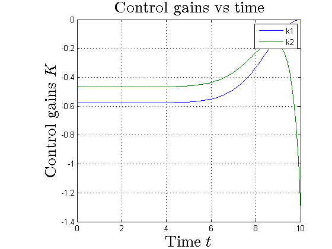

Problem Set 3 Question 3
Somrita Banerjee
clc clear all close all q = 1; r = 3; h = 4; tf = 10; A = [0 1; 0 -1]; B = [0;1]; Qf = [0 0; 0 h]; Q = [q 0; 0 0]; R = [r]; % initialize V[tf] as Qf V_final = Qf(:); for tf =[10,100] % Time in reverse dt = tf/100; rt = tf:-dt:0; [T, V] = ode45(@(t,V)mRiccati(t, V, A, B, Q, R), rt, V_final); [m, n] = size(V); VV = mat2cell(V, ones(m,1), n); fh_reshape = @(V)reshape(V,size(A)); VV = cellfun(fh_reshape,VV,'UniformOutput',false); % Method inspired by https://www.mathworks.com/matlabcentral/answers/94722 % -how-can-i-solve-the-matrix-riccati-differential-equation-within-matlab revV = flip(VV); uStar = zeros(size(revV,1),1); x = zeros(2,size(revV,1)); x(:,1) = [1;1]; for i = 1: size(revV,1) uStar(i) = -(R\(B.'))*revV{i}*x(:,i); if i ~= size(revV,1) dxdt = A*x(:,i) + B*uStar(i); x(:,i+1) = x(:,i) + dxdt * dt; end end forwardTime = fliplr(rt); matVV=cat(3, revV{:}); V1 = matVV(1,1,:); V1 = V1(:); V2 = matVV(1,2,:); V2 = V2(:); V3 = matVV(2,1,:); V3 = V3(:); V4 = matVV(2,2,:); V4 = V4(:); figure plot(forwardTime,V1,forwardTime,V2,forwardTime,V3,forwardTime,V4) title('Gains vs time','Interpreter','latex','FontSize',20) xlabel('Time $$t$$','Interpreter','latex','FontSize',20) ylabel('Gains $$V$$','Interpreter','latex','FontSize',20) legend({'V_{11}','V_{12}','V_{21}','V_{22}'},'location','northwest'); grid on figure plot(forwardTime,uStar) title('Control effort vs time','Interpreter','latex','FontSize',20) xlabel('Time $$t$$','Interpreter','latex','FontSize',20) ylabel('Control effort $$u$$','Interpreter','latex','FontSize',20) grid on figure plot(forwardTime,x) title('State evolution vs time','Interpreter','latex','FontSize',20) xlabel('Time $$t$$','Interpreter','latex','FontSize',20) ylabel('State $$x$$','Interpreter','latex','FontSize',20) legend('x1','x2'); grid on end